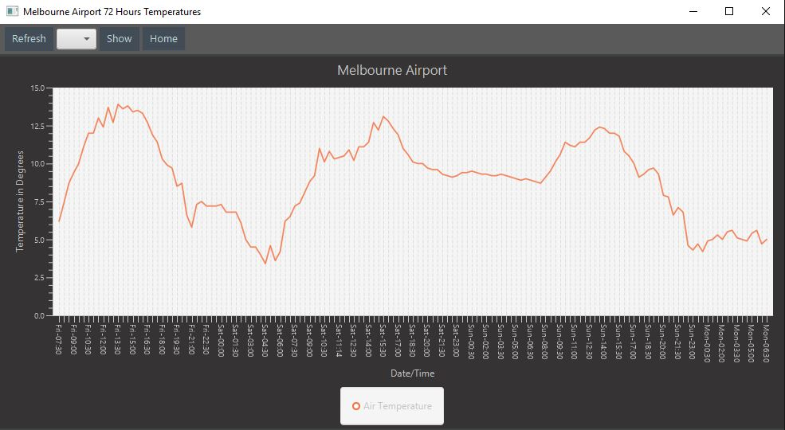
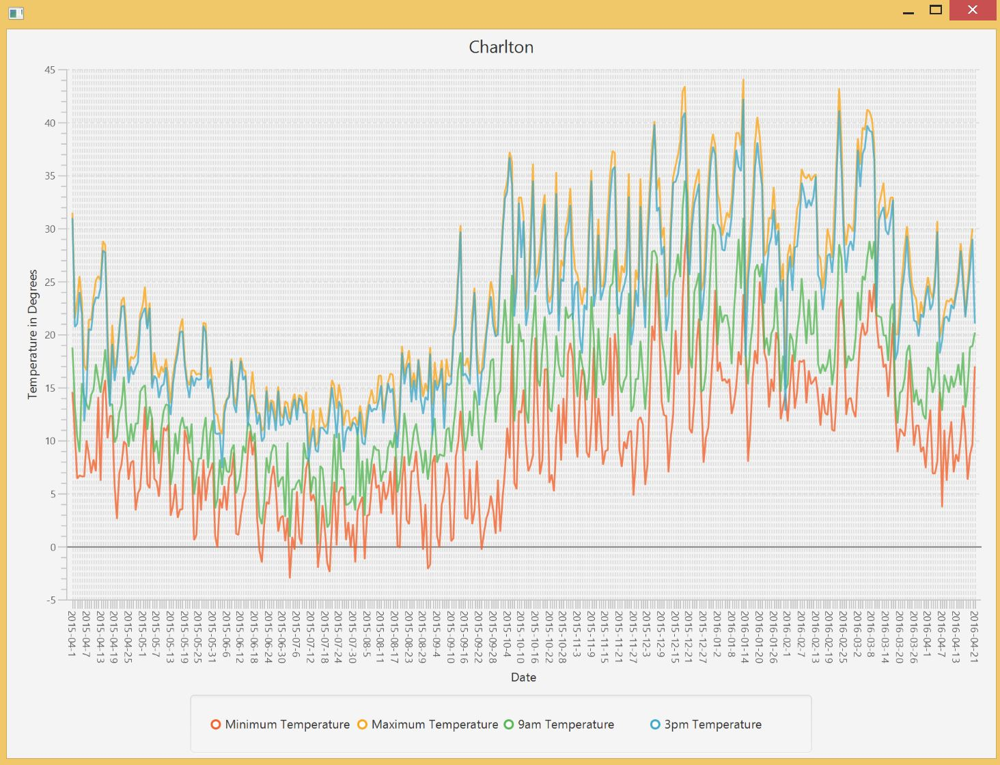
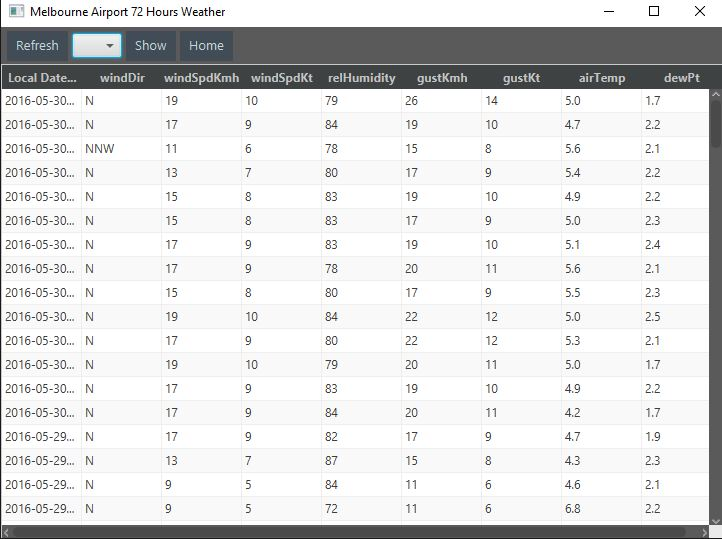

Further weather information can be explored when clicking on one of the desired buttons (From the Home Screen) to open a new window.
The first of which is the 72 hour graph , lets take a look at that now.

This graph represents the change temperature over the last seventy two hour period of time since the most recent reading. Thesse readings are grabbed in thirty minute periods, providing a more recent look at the locations temperature.
following, is the historical data graph: 
Here you can see a graph of the temperatures at certain times of the day over the previous month. You can expand the graph by either dragging the corners to a desired size, or expanding it to full screen via the button directly to the left of close. Furthermore, you can click the symbols/details below the graph on the legend to "hide" it's respected line, creating an easier layout and view.
A more detailed analysis of the weather can be found in either of the provided tables (Accessed by clicking their respected buttons).
As the names specify, the 72 hour table is a less dense table featuring basic weather related statistics.
Whilst the historical data table contains a larger and more dense amount and assortment of information over a larger period.
You can expand the sizing of each table the same ways as you would for the graphs previously mentioned, and scroll with either a bar on the right and/or on the bottom of he table as well as expanding each individidual collumn of data by dragging the sides of the desired Collumn's sub-heading either outwards or inwards.
Now you are considered to be an expert in our SEPAT 2016 assignment part 1 solution. I hope you enjoy using the application. From now, you can easily locate weather related information to help in your general weather related interests or research.